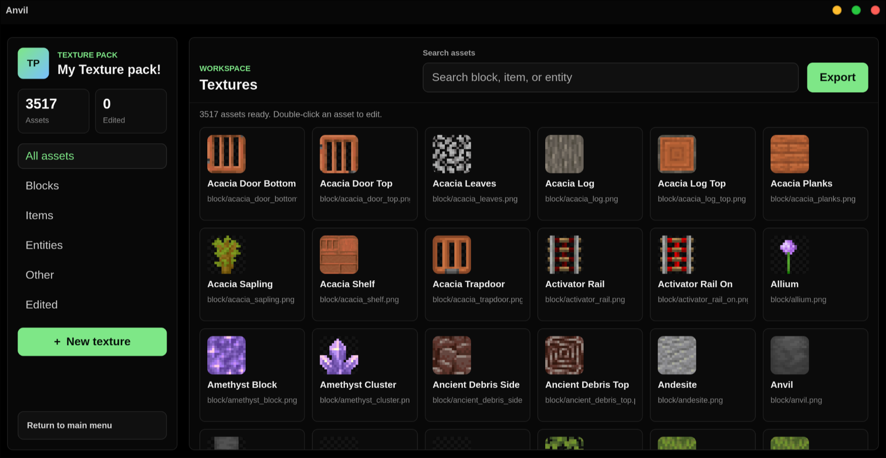
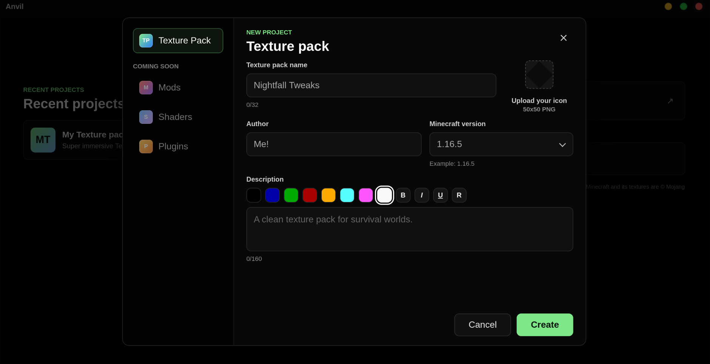
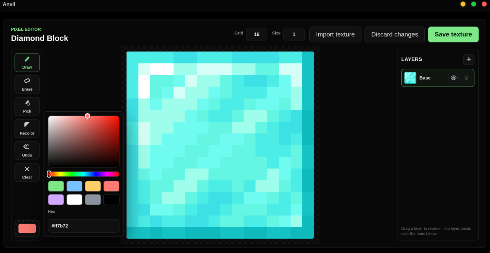

macOS
Download
Minecraft creator tools, starting with texture packs
Anvil
A desktop toolkit for Minecraft creators. Today, Anvil gives you a fast texture-pack editor: pull the vanilla textures for any version, paint over them with a layered pixel editor, recolor a whole texture in one stroke, and export a ready-to-use resource pack.
Loading the latest release…



Download
Pick your platform — links point to the latest release.
Install
macOS
Open the .dmg and drag Anvil to Applications.
The build isn't notarized yet, so the first launch needs right-click → Open (or System Settings → Privacy & Security → Open Anyway).
Windows
Run the .exe installer and follow the prompts.
SmartScreen may warn on an unsigned build — choose More info → Run anyway.
Linux — AppImage
chmod +x Anvil_*.AppImage
./Anvil_*.AppImageLinux — Debian / Ubuntu
sudo apt install ./Anvil_*.debBuild from source
git clone https://github.com/NssIs/Anvil.git
cd Anvil
npm install
npm run tauri dev # run it
npm run tauri build # build installers for your OSWhat's inside
- Texture packs available today — mods, shaders and plugins are on the roadmap while the current release focuses on resource-pack editing.
- Layered pixel editor — create, reorder and toggle layers, with a hover target outline and adjustable brush size.
- One-stroke recolor — repaint a texture in any color while keeping its shading. Turn a diamond into a ruby in seconds.
- Real vanilla textures — pulled from Mojang's official client jar for any Minecraft version, on demand.
- Per-project & safe export — each pack is isolated, and only the textures you actually edited get exported.
- Custom draggable color picker — saturation/brightness area, hue slider, hex and presets.